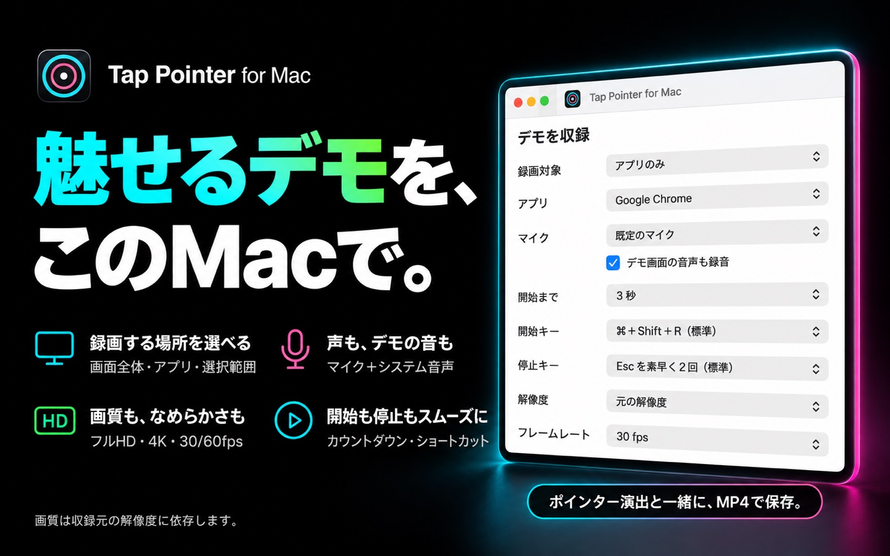

常時追従
クリックしていない間も、半透明の円がポインターについていきます。
ポインター・クリック・ドラッグを見える演出に。
macOS 15以降 · AppleシリコンとIntelのMacに対応
クリックしていない間も、半透明の円がポインターについていきます。
左クリックも右クリックも、その場で見えます。
ドラッグした道筋を線で描き、古い部分から消えていきます。
設定を変えてから、画面の上でクリック・右クリック・ドラッグしてください。
画面全体・アプリ・選択範囲
マイク＋システム音声
フルHD・4K・30/60fps
カウントダウン・ショートカット
画質は収録元の解像度に依存します。

iPhoneかAndroidのTap Pointerで月額プランを購読し、認証コードでMacを認証します。
買い切りで利用できるスマートフォン版の機能は、そのまま使えます。Mac版を使う場合は、スマートフォンのTap Pointerから月額プランに登録してください。
詳しい手順：Mac版のダウンロード